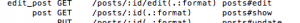
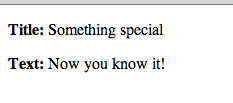

Rails - фреймворк для построения веб-приложений, который основан на архитектуре MVC, ориентирован на быстрое написание кода(не производительность). Сервером может быть Apache или nginx с модулем Phusion Passenger. В качестве СУБД можно использовать MySQL, PostgreSQL, SQLite, Oracle и прочие.
Пост, который поможет за несколько шагов развернуть простой проект на ruby on rails без знания ruby. Без претензии на новизну либо подробное рассмотрение деталей(внимание: те, кто уже знаком с Ruby либо Rails, могут сильно плеваться).
Установка Ruby
Для невиндовых операционных систем я предлагаю установку через RVM:
$ \curl -sSL https://get.rvm.io | bash -s stable
а затем:
$ rvm install ruby
* также тут можно указать какую версию(по умолчанию – последняя) поставить, например:
$ rvm install ruby-1.9.3-p484
Для пользователей Windows остается довольствоваться RubyInstaller.
Проверим установился ли руби:
$ ruby --version
Пробуем Ruby
Чтобы поиграться с руби можно запустить irb – командную оболочку, для выполнения кода из консоли
$ irb
и попробовать что-то такое
> "somestring".reverse
Если о самом Ruby представления нет, то желательно пройти какой-то крайткий курс по синтаксису, например TryRuby.
Установка Rails
$ gem install rails
Проверяем
$ rails -v
Выбор среды для разработки на Ruby on Rails
полноценные среды разработки:
- Aptana RadRails
- RubyMine (платный)
- Netbeans
текстовые редакторы с подсветкой кода:
- TextMate
- SublimeText
- Vim (с плагинами и оболочками)
Создание структуры проекта на Rails
$ rails new blog
$ rails new -h
| app/ | главный каталог, включает модели, представления, контроллеры и помощники |
| config/ | файлы конфигурации |
| db/ | управления базой данных: схема базы данных и миграции |
| doc/ | документация |
| lib/ | дополнительные библиотеки |
| log/ | логи |
| public/ | единственная папка, видимая для пользователей; содержит картинки, стили, статические html странички |
| script/rails | Скрипт Rails для генерации кода, открытия консоли сессий, или запуск локального веб-сервера |
| test/ | Юнит-тесты |
| tmp/ | Временные файлы |
| vendor/ | Сторонний код, например плагины и гемы |
| README.rdoc | инструкции к проекту |
| Rakefile | Описание задач выполняемых в командной строке (команда rake) |
| Gemfile | Gem требования для приложения, используется Bundler |
| config.ru | Файл конфигурации для Rack middleware |
| .gitignore | стандартный файл git- инструкций (список файлов, которые должны быть проигнорированы Git) |
Запуск Rails сервера
$ cd blog
$ rails server
Создаем controller и action
$ rails generate controller welcome index
app/views/welcome/index.html.erb
<h1>Hello, Rails!</h1>
Вносим изменения в route конфигурацию
# root :to => 'welcome#index'
и раскомментируем ее. Тем самым указав что наш корневой путь будет ссылаться на
'welcome#index'
$ rm public/index.html
$ rake routes
то можно увидеть список всех роутов:
welcome_index GET /welcome/index(.:format) welcome#index root / welcome#index
Добавляем ресурс
Ресурс (resourse) в терминологии Rails – это коллекция объектов, над которыми можно выполнять CRUD операции.
Чтобы добавить путь в роутах для нового ресурса достаточно написать resources :%resourseName%, т.е. в нашем примере добавим строчку:
resources :posts
в config/routes.rb.
Пероверим роуты уже знакомой командой:
$ rake routes welcome_index GET /welcome/index(.:format) welcome#index posts GET /posts(.:format) posts#index POST /posts(.:format) posts#create new_post GET /posts/new(.:format) posts#new edit_post GET /posts/:id/edit(.:format) posts#edit post GET /posts/:id(.:format) posts#show PUT /posts/:id(.:format) posts#update DELETE /posts/:id(.:format) posts#destroy root / welcome#index
$ rails g controller posts index
def new end
{kind=link}
Работа с представлением(view)
<%= form_for :post, url: posts_path do |f| %>
<p>
<%= f.label :title %><br>
<%= f.text_field :title %>
</p>
<p>
<%= f.label :text %><br>
<%= f.text_area :text %>
</p>
<p>
<%= f.submit %>
</p>
<% end %>
class PostsController < ApplicationController
def index
end
def new
end
def create
render text: params[:post].inspect
end
end
Создание моделей
$ rails generate model Post title:string text:text
$ rake db:migrate
Сохранение данных модели в базу
Теперь перепишем на метод create так, чтобы он сохранял данные в базу:
def create
@post = Post.new(params[:post]) #создаем модель и наполняем данными формы
@post.save # сохраняем модель
redirect_to @post #переадресовываем на страницу отображения поста
end
Вывод данных
По умолчанию для вывода модели используется экшн show, что можно проверить опять же такие командой rake routes:

Создадим в нашем контроллере данный метод:
def show
@post = Post.find(params[:id])
end
<p> <strong>Title:</strong> <%= @post.title %> </p> <p> <strong>Text:</strong> <%= @post.text %> </p>
Еще раз попробуйте добавить новый пост http://localhost:3000/posts/new

Поработаем над выводом всех сообщений. Для этого отредактируем index шаблон (app/views/posts/index.html.erb):
<h1>Listing posts</h1>
<table>
<tr>
<th>Title</th>
<th>Text</th>
</tr>
<% @posts.each do |post| %>
<tr>
<td><%= post.title %></td>
<td><%= post.text %></td>
</tr>
<% end %>
</table>
И добавим получение данных в экшен-метод:
def index
@posts = Post.all
end
<%= link_to "My Blog", controller: "posts" %>
со странички постов на создание нового:
<%= link_to 'New post', new_post_path %>
<%= link_to 'Back', posts_path %>
Обновление данных
def edit
@post = Post.find(params[:id])
end
<h1>Editing post</h1>
<%= form_for :post, url: post_path(@post), method: :patch do |f| %>
<% if @post.errors.any? %>
<div id="error_explanation">
<h2><%= pluralize(@post.errors.count, "error") %> prohibited
this post from being saved:</h2>
<ul>
<% @post.errors.full_messages.each do |msg| %>
<li><%= msg %></li>
<% end %>
</ul>
</div>
<% end %>
<p>
<%= f.label :title %><br>
<%= f.text_field :title %>
</p>
<p>
<%= f.label :text %><br>
<%= f.text_area :text %>
</p>
<p>
<%= f.submit %>
</p>
<% end %>
<%= link_to 'Back', posts_path %>
def update
@post = Post.find(params[:id])
if @post.update(params[:post])
redirect_to @post
else
render 'edit'
end
end
<td><%= link_to 'Show', post %></td> <td><%= link_to 'Edit', edit_post_path(post) %></td>
Удаление данных
def destroy
@post = Post.find(params[:id])
@post.destroy
redirect_to posts_path
end
<td><%= link_to 'Destroy', post_path(post),
method: :delete, data: { confirm: 'Are you sure?' } %></td>
Создание партиалов представления
<%= form_for @post do |f| %>
<% if @post.errors.any? %>
<div id="error_explanation">
<h2><%= pluralize(@post.errors.count, "error") %> prohibited
this post from being saved:</h2>
<ul>
<% @post.errors.full_messages.each do |msg| %>
<li><%= msg %></li>
<% end %>
</ul>
</div>
<% end %>
<p>
<%= f.label :title %><br>
<%= f.text_field :title %>
</p>
<p>
<%= f.label :text %><br>
<%= f.text_area :text %>
</p>
<p>
<%= f.submit %>
</p>
<% end %>
<%= render 'form' %>